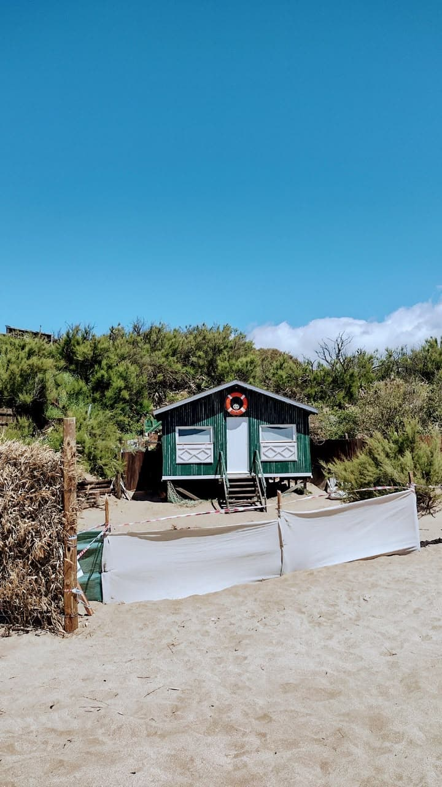
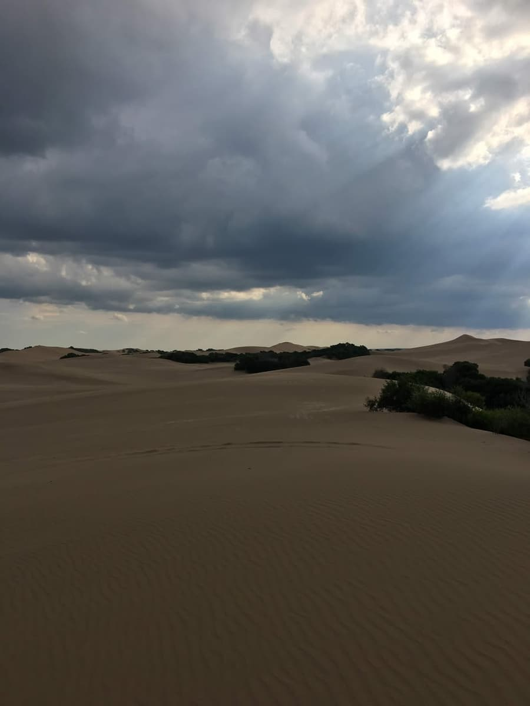
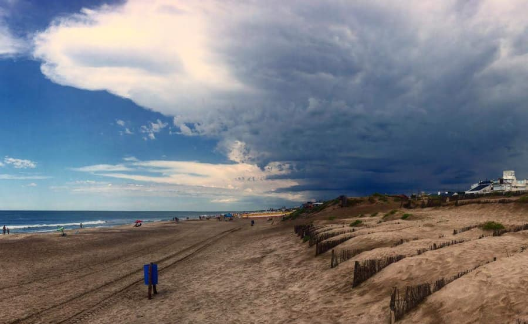
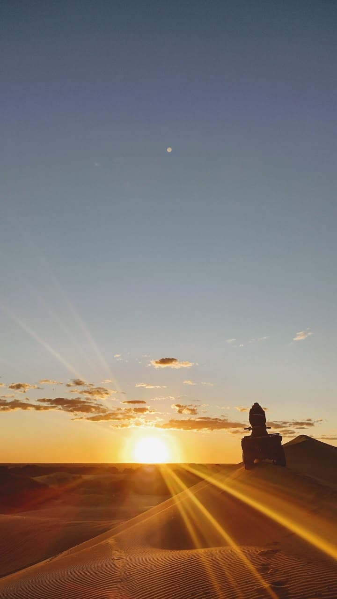
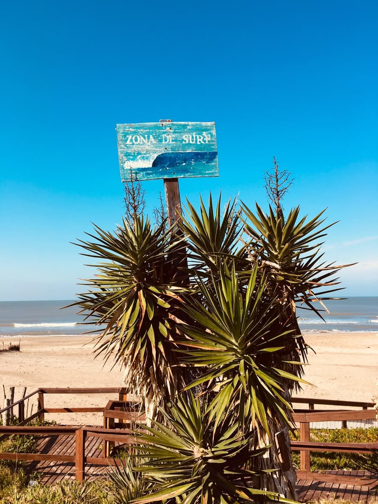
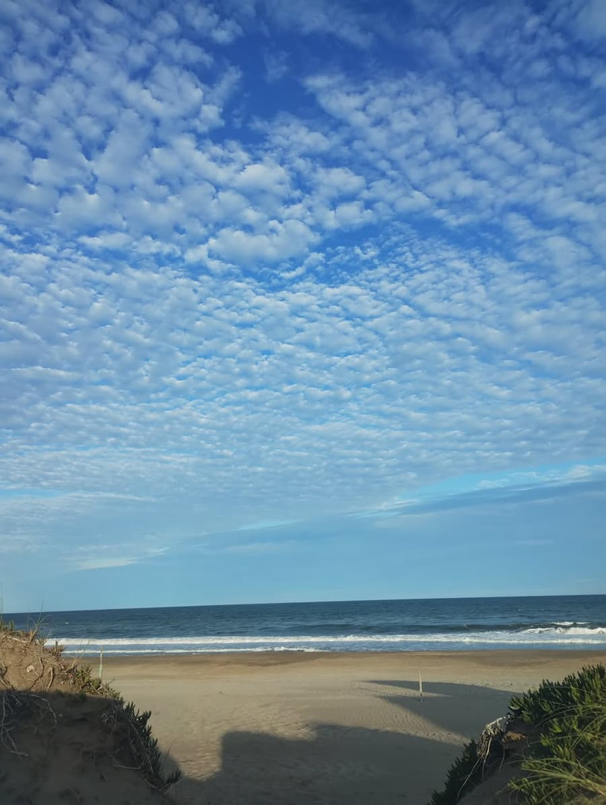
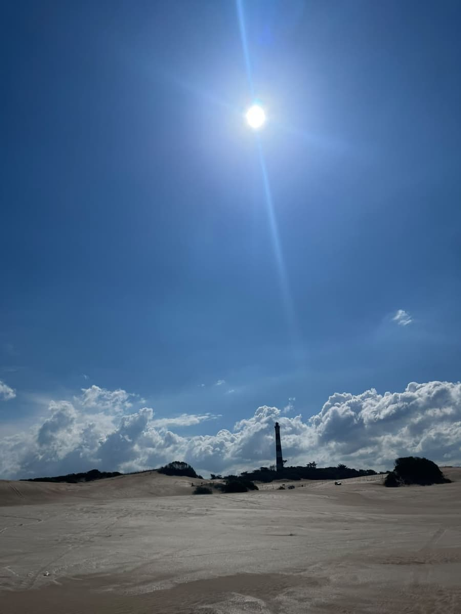
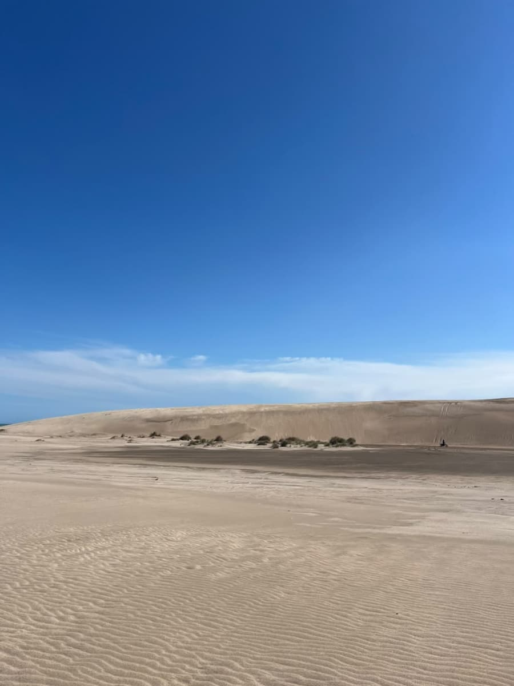

El mediodía es el momento con más sol y más gente en la playa. En verano el calor se siente fuerte, las familias ya tienen armada la sombrilla y los paradores se llenan de gente que va a almorzar sin tener que irse de la arena.
Es buena hora para comer algo rico frente al mar y después buscar un plan con más movimiento. Nosotros proponemos dos cosas: almorzar en un parador y después ir a La Frontera, al norte de la ciudad, donde están los médanos más grandes.
En esta parada
Horario sugerido: 12 a 16 h
Duración: 2 a 3 horas
Costo: caminar es gratis, el sandboard se paga
Para quién: los que buscan un poco de adrenalina
Qué llevar: agua, gorra y anteojos de sol

Después de la mañana en el mar toca comer. A lo largo de toda la costa hay paradores, en Pinamar,
Ostende, Valeria del Mar y Cariló. Hay para todos los gustos: minutas, licuados, pescado fresco y
algunos lugares con cocina de autor a la orilla del mar.
La mayoría de los paradores tiene mesas en la arena o en un deck de madera, con sombra para escaparle al sol del mediodía. Algunos también alquilan carpas y sombrillas por el día, así que es fácil quedarse un buen rato.
Si vas con chicos, lo más práctico es elegir uno cerca de donde estás en la playa, así no hay que caminar mucho con el calor. Si vas con amigos, hay paradores con música y un ambiente más de juntada.
Un consejo: en temporada alta, los fines de semana se llenan rápido al mediodía. Si querés comer tranquilo, conviene ir un poco antes de la una o después de las tres.

Con la panza llena, el recorrido sigue al norte, a La Frontera. Son unos siete kilómetros de playa
y médanos, a casi ocho kilómetros del centro. Los médanos más grandes están cerca de la ruta y
llegan a medir 40 metros.
Es la parada con más adrenalina del día y también la que tiene la mejor vista. Eso sí, es un lugar
natural y hay que cuidarlo.
Arriba de los médanos se ve todo: el mar para un lado, el bosque para el otro y la ciudad a lo lejos. Es uno de los mejores lugares de la zona para sacar fotos, sobre todo cuando el sol empieza a bajar.
Se puede caminar por la arena sin pagar nada o hacer sandboard con una tabla alquilada. Subir cansa más de lo que parece, así que conviene tomarlo con calma y llevar agua.
Atención: desde febrero de 2026 no se puede andar con vehículos por los médanos por una
medida judicial. El municipio tiene que probar un sistema de seguridad nuevo antes de la próxima
temporada. Antes de ir, consultá en la Secretaría de Turismo si ya está habilitado.
Para llegar a La Frontera hay que ir hacia el norte de la ciudad. Desde la playa norte se puede seguir caminando por la arena, pero es bastante lejos (casi ocho kilómetros desde el centro), así que la mayoría va en auto hasta la zona y después sigue a pie.
Una vez ahí el paisaje cambia por completo: casi no hay casas, la playa es más ancha y los médanos se ven enormes. Es un buen lugar para quedarse un rato, sacar fotos y mirar el mar desde arriba.
Los médanos más grandes llegan a los 40 metros. Subirlos cansa más de lo que parece.
Qué hacer
Caminar por los médanos
Se llega a pie desde la playa norte y no se paga nada. Desde arriba se sacan las mejores fotos del
día, con el mar de fondo.
Sandboard
Es bajar los médanos arriba de una tabla. Hay pendientes de 18 a 30 grados y pistas de hasta 90
metros. La tabla se alquila ahí mismo.
Excursiones en 4x4
También hay paseos en 4x4, camión, cuatriciclo o UTV, siempre con guía. Solo se pueden hacer si el
municipio los habilita esa temporada.
Si es tu primera vez haciendo sandboard, empezá por un médano chico y bajá sentado. Parece fácil, pero la tabla agarra velocidad rápido. Cuando le agarres la mano podés probar parado o en las pistas más largas.
Qué se paga y qué no
Actividad
Costo
Caminar por La Frontera
Gratis
Almorzar en un parador
Pago
Sandboard con alquiler de tabla
Pago
Excursión guiada en vehículo
Pago (si está habilitada)
Ojo con el sol: en los médanos no hay sombra y la arena refleja mucho. Al mediodía es cuando más pega, así que acordate de la gorra, el protector y de llevar agua suficiente para todo el rato que vayas a estar.
Información útil
Datos
Dónde: Pinamar norte, a la altura del km 386 de la Ruta 11.
Cuándo: todo el año, pero las excursiones son más en verano. Mejor no ir los
días de mucho viento.
Duración: de 2 a 3 horas.
Acceso: a pie desde la playa norte.
Recomendaciones
Si no tenés experiencia en la arena, andá con guía.
Llevá agua, gorra y anteojos de sol.
Movete solo por las zonas habilitadas.
No dejes basura.
Si vas en cuatriciclo o UTV
Cuando esté habilitado, el conductor tiene que tener:
Casco.
Licencia específica.
Papeles del vehículo y seguro al día.
Una antena de dos metros con banderín.
Más fotos






Dónde queda
Ubicación aproximada.
Después de tanta arena, el recorrido baja hacia el bosque, que es justamente donde los médanos se
convirtieron en ciudad. ¿Te animás al sandboard?
Reservalo acá.